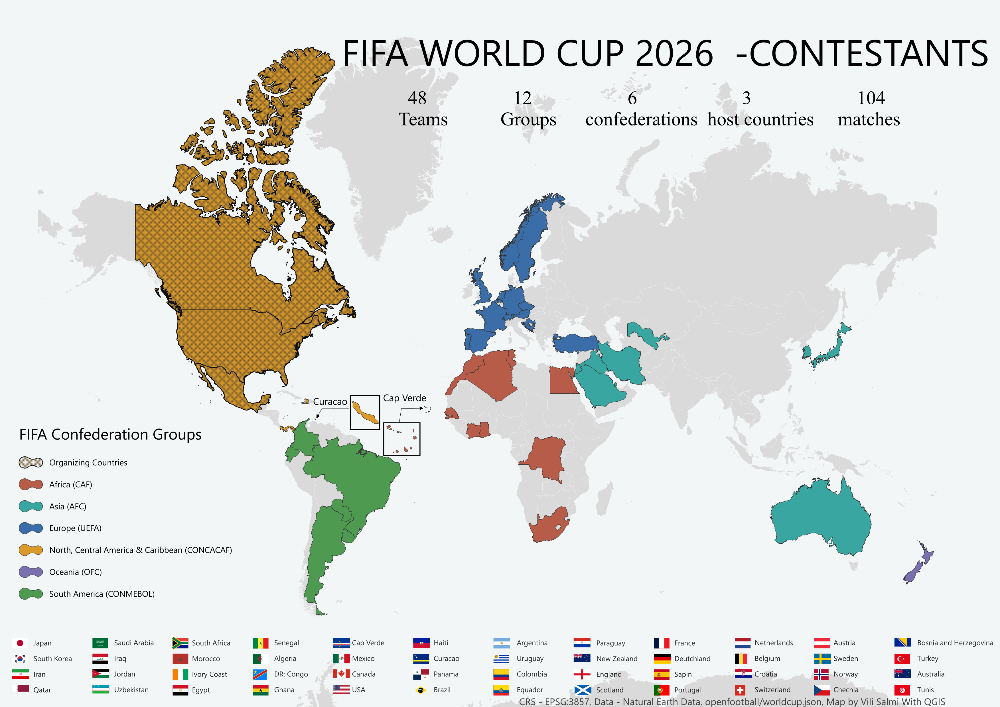

16 Stadiums, 4 Time Zones
The second map focuses on the host cities and stadiums across Canada, the United States and Mexico.
 View full-size map
View full-size map
A cartographic look at the expanded 48-team tournament, its host stadiums, time zones and group-stage travel distances.
The first map shows the global distribution of qualified teams and how the 48-team tournament is divided between FIFA confederations.

View full-size mapThe second map focuses on the host cities and stadiums across Canada, the United States and Mexico.
View full-size map
The final map explores how teams move between stadiums during the group stage. Use the layer menu to compare individual team routes.